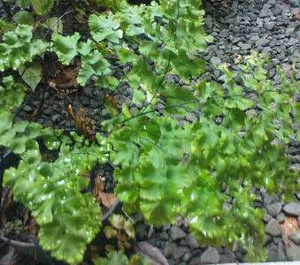
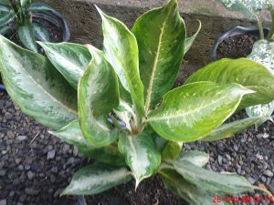

- Adiantum atau suplir. |
Suplir sendiri mempunyai berbagai jenis dan varietas. Meski begitu, suplir yang cukup cantik karena berdaun kecil dan memberi suasana segar itu, agak sulit dipelihara karena membutuhkan lingkungan yang lembab dan udara bersih. Suplir membutuhkan sedikit cahaya. Karena itu, sebagian tempatnya harus teduh. Jenis tanaman ini juga tidak terlalu banyak membutuhkan air, asal lembab dan tidak basah, tetapi juga tidak kering. Air penyiram sebaiknya air hujan. .
|
- Aglaonema 
|
Tanaman ini berdaun lonjong hijau, dihiasi bintik-bintik, garis, atau ban berwarna abu-abu keperakan. Sri rejeki ini mudah ditanaman tanpa perawatan intensif, tapi membutuhkan cahaya yang tidak langsung dan lingkungan yang lembab. Hanya saja, Anda perlu hati-hati bila ruangan terlalu panas dan kering di musim kemarau, |
| A B C D E F G H I J K L M N O P Q R S T U P W X Y Z | |